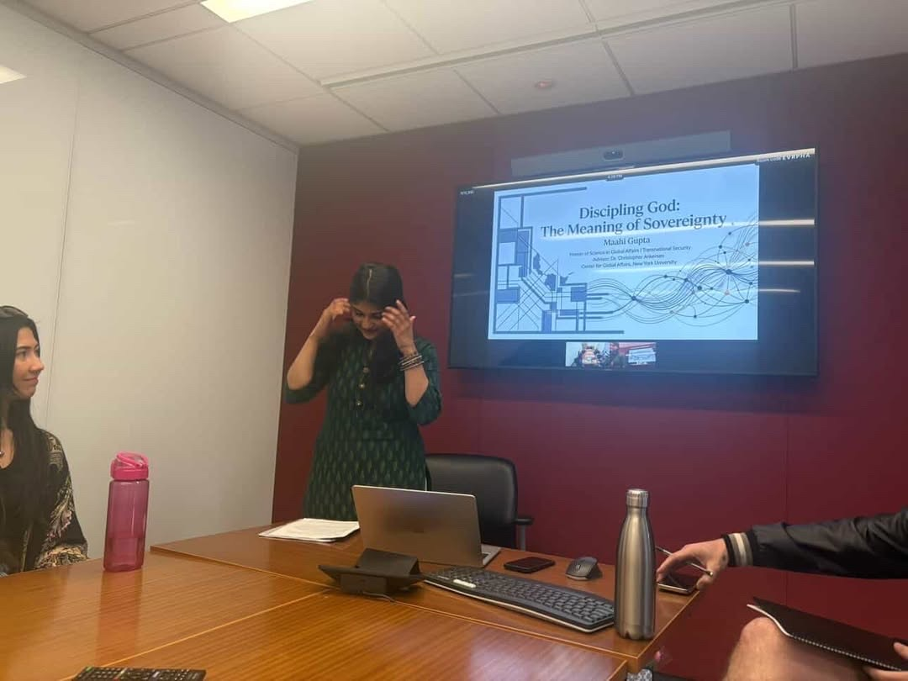
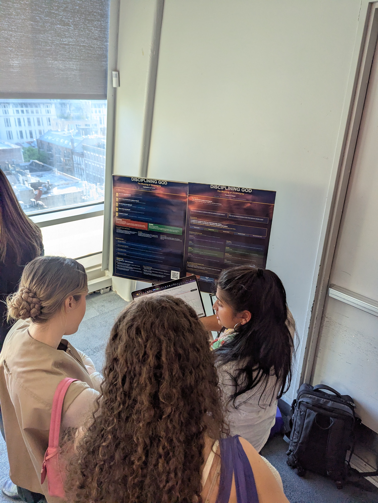
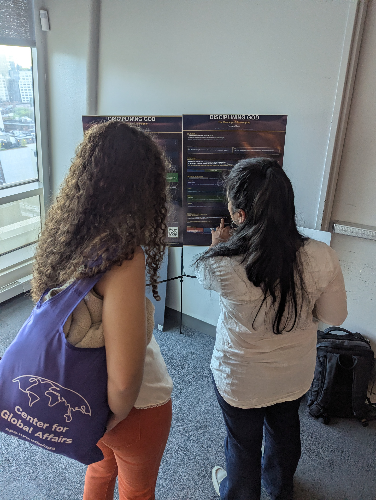

Identify the organizing body
State, corporation, armed group, institution, community, or coalition capable of making a claim over conditions of reproduction.
Disciplining God
A sovereignty diagnosis system for mapping material capacity, symbolic authority, recognition, and contested claims.
move your cursor · the globe follows
Access code required
Your code: WALKER-7759
What Winston is
Winston is built from Maahi Gupta’s thesis, Disciplining God: The Meaning of Sovereignty. It does not treat sovereignty as a static legal property possessed by states. It treats sovereignty as a continuous system of claims, recognition, discipline, control, and identity reproduction.
“Sovereignty is a continuous system in which an organizing body claims, in relation to another, the dynamic capacity to discipline and control the material and symbolic conditions necessary for its own reproduction over time.”
keep scrolling ↓
How Winston thinks
State, corporation, armed group, institution, community, or coalition capable of making a claim over conditions of reproduction.
Who claims authority, against whom, over what conditions, and through which networks of recognition or contestation?
Material: territory, infrastructure, resources, personnel, finance. Symbolic: legitimacy, myth, narrative, identity, memory, recognition.
Zero-sum, shared, or entangled. This decides whether institutions can resolve, coordinate, or only manage.
Sovereignty lens
Formal sovereignty remains intact, but material capacity is externally constrained while symbolic authority is fractured across military-civilian legitimacy, language, and generational identity.
Clickable sovereignty map
Case studies
Resource allocation
Winston asks whether institutional money is being spent on the actual conditions being fought over. Humanitarian spending can keep people alive while leaving the symbolic conflict that produces the war untouched. The tool flags that misalignment before the response design hardens.
Material security / humanitarian management
Legitimacy, identity repair, political capacity, narrative infrastructure
The framework does not claim audited savings. It shows where the response is misaligned with the nature of the sovereignty contest.
Ask Winston
Ask me about sovereignty, misallocation, material and symbolic conditions, Meta, ISIS, Pakistan, Ukraine, Palestine, smallpox, or the UN.
Field notes / images
This section pulls from your repo’s images/ folder. Replace or add files there and the visual river becomes the atmospheric layer for Winston’s story.






Sources and intellectual architecture
About Maahi / About Winston
Graduate of NYU’s Center for Global Affairs, working across global risk, transnational security, data, energy, and political theory. Winston began as a way to make a sovereignty thesis legible outside the classroom.
Disciplining God: The Meaning of Sovereignty won the NYU SPS Best Thesis/Capstone Award. It argues that sovereignty is not a static state property but a relational system of material and symbolic reproduction.
Winston is the diagnostic interface: a way to test whether a conflict is zero-sum, shared, or entangled, and whether institutional resources are being directed toward the right conditions.